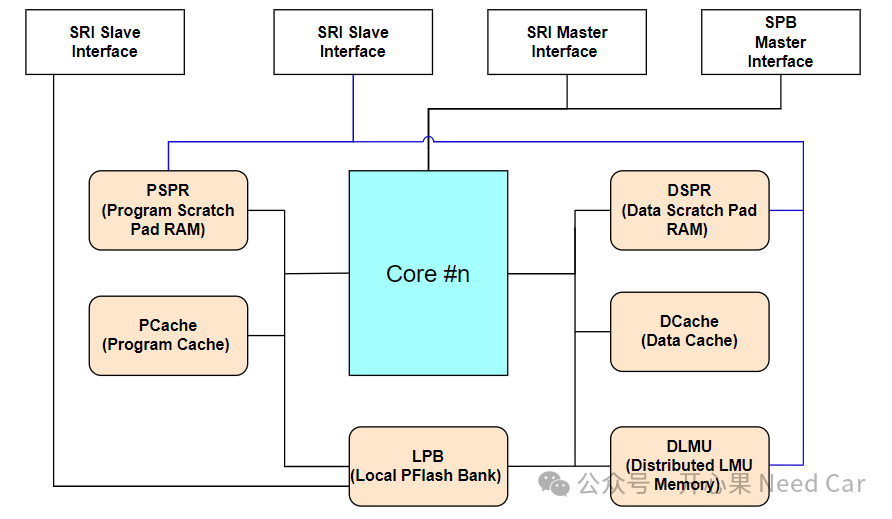

返回目录这些芯片内存（Memory）区，你真的用过？
开心果 Need Car · 2024-06-20T06:48:00+08:00 · 微信原文
付费文章：当前仅保存公开试读部分，全文尚未获取。
开发的小伙伴，对于芯片内存（Memory）应该并不陌生。比如，Flash、RAM这些内存区，应该再熟悉不过了。如果针对车规级MCU芯片，再进一步细分Flash，又可以分为Data Flash（DFlash）和Program Flash（PFlash）;对于RAM，或者说SRAM（Static RAM）,又分为PSPR、PCache、DSPR、DCache、DLMU (Distributed Local Memory Unit)、LMU（Local Memory Unit）等。其中，DFlash常用来模拟EEPROM（Electrically Erasable Programmable Read Only Memory）。除此之外，还有UCB（User Configuration Blocks）、CFS（Configuration Sector）、BootROM等内存区。说到这些内存区，大家或许也了解。而实际的工程开发中，你是否都用过？- DAM（Default Application Memory）你是否知道和使用过？
- 为什么CPUx访问本地LPB（Local PFlash Bank）比访问CPUy的LPB更快？
如上的诸多疑问，你是否有答案？如果你存有困惑，本文将解开上述谜团。每个Core（这里指主核）直接关联的内存区（Memory）包含6个，这6个内存区在物理上隔离，包括：PSPR、PCache、DSPR、DCache、DLMU、LPB，示意如下：